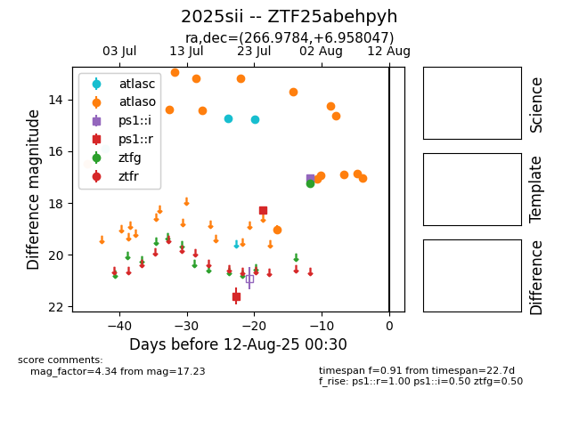

Target 2025sii at 2025-08-12 04:34, see:
FINK: fink-portal.org/2025sii
Lasair: lasair-ztf.lsst.ac.uk/objects/2025sii
ALeRCE: alerce.online/object/2025sii
TNS: wis-tns.org/object/2025sii
YSE: ziggy.ucolick.org/yse/transient_detail/2025sii
alt names
2025sii (yse,tns)
ZTF25abehpyh (ztf,fink)
coordinates:
equatorial (ra, dec) = (266.9784,+6.95805)
galactic (l, b) = (31.9693,+17.27654)
photometry
last atlasc=14.75, atlaso=16.89, ps1::i=17.04, ps1::r=18.29, ztfg=17.23
3 atlasc, 20 atlaso, 1 ps1::i, 2 ps1::r, 1 ztfg detections
